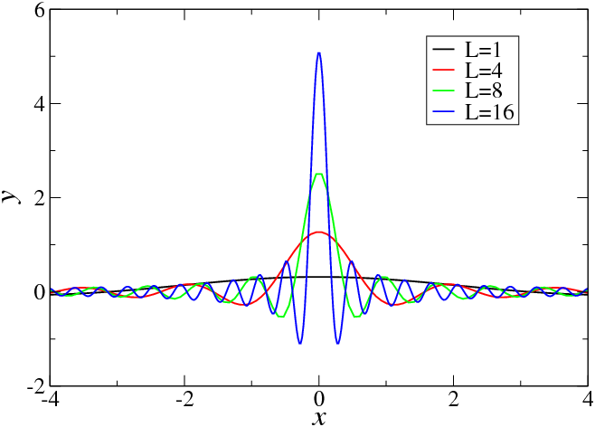

Dirac Delta Function
the dirac delta function is a way to describe a single, perfectly sharp tap. it is one of the stranger objects in mathematics, and also one of the most useful.
imagine a calm pond. you drop one pebble at one exact place and one exact moment. the pebble kisses the water for an almost absurdly short time, then disappears.
it is tempting to argue that because the duration is so small, the effect should be nothing at all. zero time, zero area, zero effect. an ordinary function that is nonzero for no time at all integrates to zero.
the pond disagrees. ripples spread outward anyway, carrying energy and structure across the surface. something that happened for almost no time at all leaves a visible, lasting pattern.
the delta function is the mathematical object invented to capture this. it is denoted $\delta(x)$ and defined by two properties:
$$\delta(x) = 0 \quad \text{for all } x \neq 0$$ $$\int_{-\infty}^{\infty} \delta(x)\, dx = 1$$no ordinary function satisfies both of these simultaneously. a function that is zero everywhere except at one point has integral zero, not one. dirac introduced $\delta$ anyway, not as a function in the classical sense but as a useful fiction, a limiting object that behaves like the limit of a sequence of increasingly tall, narrow pulses whose area is always exactly one.
one natural sequence is gaussians. let:
$$\delta_\epsilon(x) = \frac{1}{\epsilon\sqrt{\pi}}\, e^{-x^2/\epsilon^2}$$
as $\epsilon \to 0$, this gaussian becomes infinitely tall and infinitely narrow, but its integral stays one. the delta function is the limit of this sequence, not as a pointwise limit (that limit does not exist in the ordinary sense) but in the sense that for any reasonable function $f$:
$$\lim_{\epsilon \to 0} \int_{-\infty}^{\infty} \delta_\epsilon(x)\, f(x)\, dx = f(0)$$this is the sifting property, and it is the reason the delta function is useful. it picks out the value of $f$ at exactly one point:
$$\int_{-\infty}^{\infty} \delta(x - a)\, f(x)\, dx = f(a)$$the shifted delta $\delta(x - a)$ is a tap at position $a$. integrated against any function, it returns the function's value at $a$. everything else is ignored.
dirac introduced this object in the late 1920s from quantum mechanics. in quantum theory, a particle with a definite position $x = a$ is represented by a state concentrated entirely at that point, zero probability of being found anywhere else, and total probability one. no ordinary function captures this. the delta function does. dirac needed it to make the mathematics of position eigenstates work, and he used it without apology, leaving the rigorous justification to mathematicians.
that justification came in 1945, when laurent schwartz developed the theory of distributions. a distribution is not a function but a linear functional: something that takes a function as input and returns a number. the delta distribution takes $f$ and returns $f(0)$. this reframing made the delta function mathematically legitimate and earned schwartz the fields medal in 1950.
now here is a beautiful connection. what is the fourier transform of the delta function?
recall from fourier analysis that the transform of a function $f(x)$ is:
$$\hat{f}(\xi) = \int_{-\infty}^{\infty} f(x)\, e^{-2\pi i \xi x}\, dx$$apply this to $\delta(x)$:
$$\hat{\delta}(\xi) = \int_{-\infty}^{\infty} \delta(x)\, e^{-2\pi i \xi x}\, dx = e^{-2\pi i \xi \cdot 0} = 1$$the fourier transform of the delta function is identically one. it contains every frequency in equal measure. this makes precise sense: a perfect instantaneous tap has no preferred timescale. it excites all frequencies simultaneously, which is exactly why striking a bell produces a rich spectrum of overtones rather than a single note. the sharper the tap, the broader the frequency content. this is a manifestation of the uncertainty principle: a signal perfectly localised in time is completely delocalised in frequency.
conversely, the inverse fourier transform of the constant function $1$ is the delta function. a signal that contains all frequencies in equal measure, with no preference for any timescale, is a single perfect spike in time.
the delta function sits at the intersection of several ideas: it is the input that green's functions are built to respond to, the object that makes fourier analysis and quantum mechanics speak the same language, and the precise mathematical description of what it means for something to happen at exactly one place and one time.